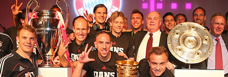

The Bundesliga's record title-holders have been a dominant force in German football since the 1970s. Only three times since have more than two years passed without Bayern getting their hands on the precious plate. Chief personnel supplier to the national team, Bayern also boast by far the largest membership of any club in Germany and after UEFA Champions League final defeats in 2010 and 2012, the Bavarians finally lifted Europe's biggest club prize again in 2013, part of their historic treble-winning season
.
Name: FC Bayern München AG
Address : Säbener Straße 51-57
81547 München
Telephone : +49 (0)89 - 69 93 10
Fax : +49 (0)89 - 64 41 65
Homepage: www.fcbayern.de (English)
Ticket hotline+49 (0)89 - 69931-333
Club honoursGerman Champions: 1932, 1969, 1972, 1973, 1974, 1980, 1981, 1985, 1986, 1987, 1989, 1990, 1994, 1997, 1999, 2000, 2001, 2003, 2005, 2006, 2008, 2010, 2013
DFB Cup Winners: 1957, 1966, 1967, 1969, 1971, 1982, 1984, 1986, 1998, 2000, 2003, 2005, 2006, 2008, 2010, 2013
European Cup Winners: 1974, 1975, 1976
UEFA Champions League Winners: 2001, 2013
European Cup Winners' Cup Winners: 1967
UEFA Cup Winners: 1996
Intercontinental Cup Winners: 1976, 2001
German Supercup Winners: 1983, 1987 1990, 2010, 2012
League Cup Winners: 1997, 1998, 1999, 2000, 2004, 2007
UEFA Super Cup Winners: 2013
Other sporting divisions: Handball, table tennis, artistic gymnastics, basketball, chess, bowling, refereeing
Club president: Uli Hoeneß
Chief executive: Karl-Heinz Rummenigge
Sporting director: Matthias Sammer
Head coach: Pep Guardiola
Assistant coaches: Hermann Gerland, Domenec Torrent, Toni Tapalovic (goalkeeping)
Club doctorDr.: Hans-Wilhelm Müller-Wohlfahrt
Press spokesman: Markus Hörwick
|